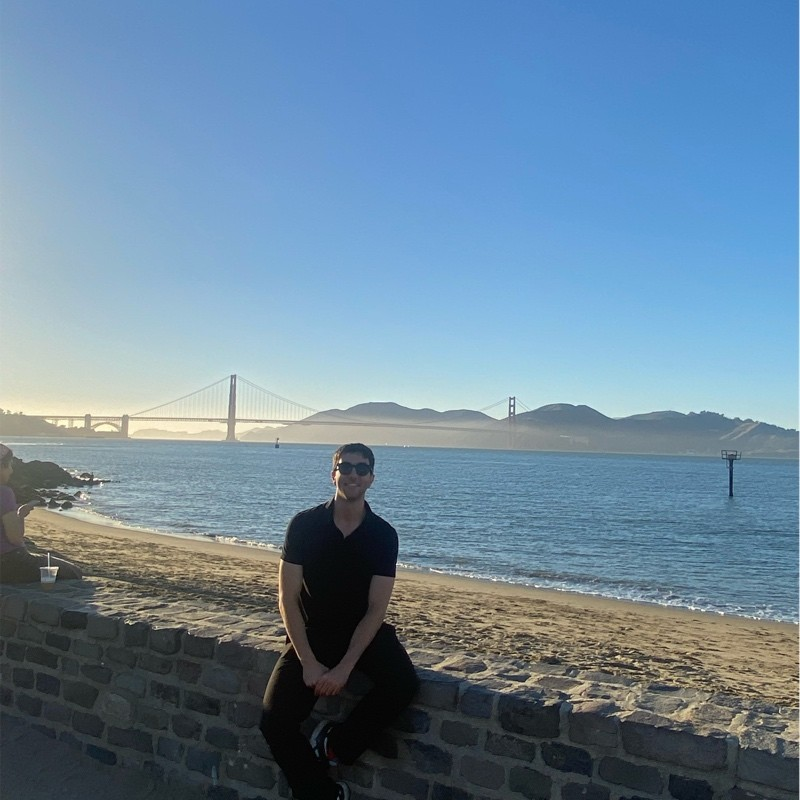

About Me
Hi, I'm Mustafa Ercengiz. I’m someone who loves breaking down complex problems and figuring out how to make things work better—whether it's optimizing a system, improving a strategy, or training a model to make smarter predictions. My journey started in management engineering, but along the way, I got hooked by technological developments, mostly data science, machine learning, and AI-driven decision-making.
Through design and development, I strive to blend form and function in everything I do.